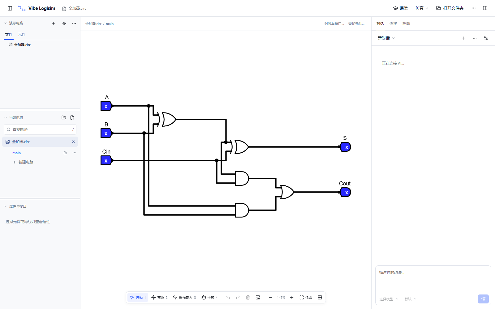
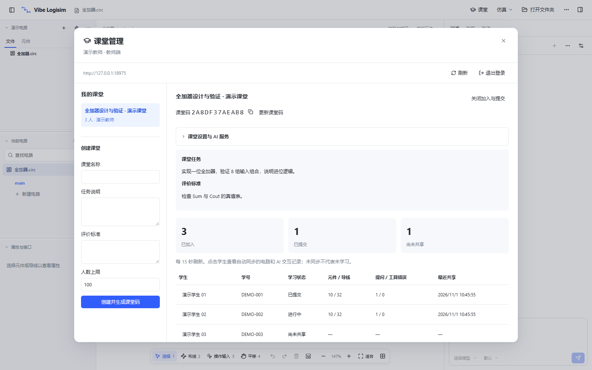

自己动手，或让 AI 接手一部分
放置元件、连线、修改属性、解释选区。工具直接操作工程，保留修订与撤销记录。
画图、写需求、跑仿真，和 AI 一起验证你的想法。
再把真实的学习过程，带进课堂。

从一个全加器，
到一堂能看见过程的实验课。
打开已有工程继续编辑，也可以把需求交给 AI。
每一次改动，都能回到图面和仿真结果里检查。
放置元件、连线、修改属性、解释选区。工具直接操作工程，保留修订与撤销记录。
切换输入、推进时钟、观察信号。用仿真检查行为，AI 的解释始终可以验证。
阅读参考资料，讨论连接关系，整理复杂电路。成果仍是可继续编辑的 .circ 文件。
发布任务、加入课堂、同步学习证据。
让问题和教学建议都有具体记录可以追溯。

截图中的教师和学生均为本地演示账号，不代表真实用户量或使用反馈。
教师创建和修改课堂。学生加入后，绑定工作文件夹，自动同步当前电路与 AI 对话；切换到其他项目时暂停。
教师从自己的模型库选择配置。学生使用独立代理凭据，也能选择个人服务，上游真实密钥留在服务器。
教师按需生成学情报告，查看用量预估。相同证据与问题复用报告；分析提供教学参考，当前不提供自动判题。
Windows x64 · 课堂协作测试版
构建批次 2026.10.30 · 应用版本 0.6.0-beta.3
本页直接提供包含课堂功能的固定版本，
无需 GitHub
登录即可下载。
安装后从开始菜单打开。
适合日常使用与首次体验。
正在读取校验信息…
解压到较短路径，例如 D:\VibeDemo。
运行
start.cmd，无需配置开发环境。
正在读取校验信息…
Windows 10/11 x64，便携版需要 Microsoft Edge WebView2。应用未签名，系统可能提示“未知发布者”，请核对本页校验值后再决定运行。
Linux 课堂版暂不在本页提供。开发者可查看 课堂功能源码与 PR #32 ↗，请勿把其他旧 Release 当成本页课堂版。
下载完整校验清单放入 .circ 电路、组件库和参考资料。建议保留相对目录，避免已有工程找不到依赖。
手工编辑与仿真无需课堂账号或模型额度。下载全加器示例，切换输入，观察 Sum 与 Cout。
个人使用在 AI 设置中添加服务。课堂使用点击标题栏“课堂”，填写下方服务地址，注册学生账号并输入教师提供的课堂码。
https://lovej.site/vibe-classroom
学生账号可自行注册。教师注册需要由维护者线下提供的邀请码。不要把邀请码或 API Key 发布到评论区。
需要先加入对应课堂，并由教师开放模型服务。在课堂中的“AI 服务选择”点击“使用教师提供的 AI”。个人模型仍可独立配置。
当前学情分析依据已同步的证据提供建议，没有在服务器运行电路，不提供自动正确性判分。请使用仿真和测试输入核对。
哪里顺手，哪里让你停了下来？
留下具体的任务、操作与期待，我们认真读。
正在加载评论…